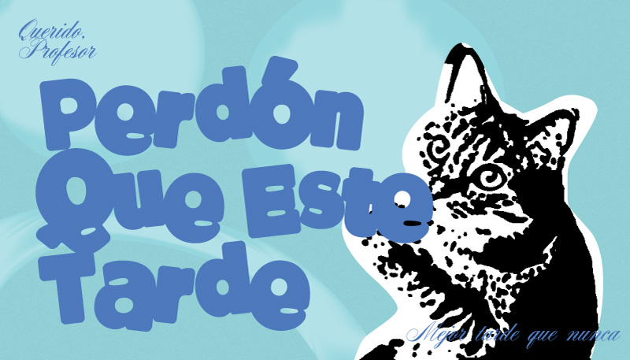
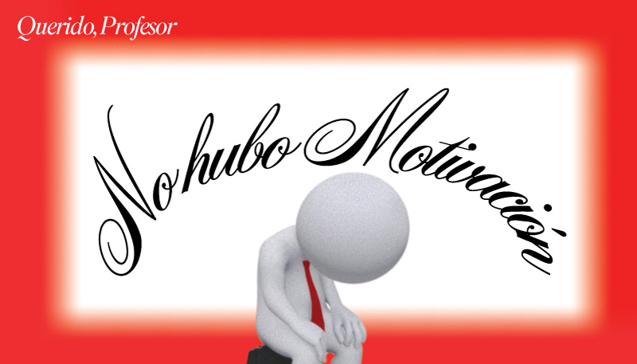
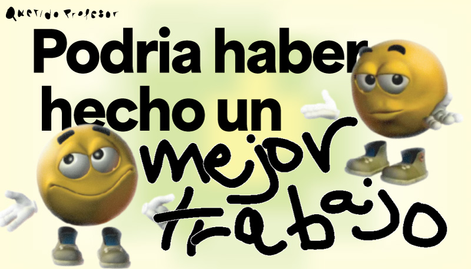

El proyecto “Querido Profesor…” nace a partir de una dificultad común: al comunicarnos por correo con docentes, muchas veces es complicado transmitir emociones o expresar que no entendemos algo sin que el mensaje se interprete de forma equivocada. En lo personal, me resulta complejo hacer que mis palabras se lean con la intención correcta y no como molestia. Por esta razón, surge este mini proyecto de business cards que funcionan como accesorios comunicativos, apoyando el mensaje escrito y sumando un toque de humor a situaciones cotidianas, como “perdón que este tarde, mejor tarde que nunca”.